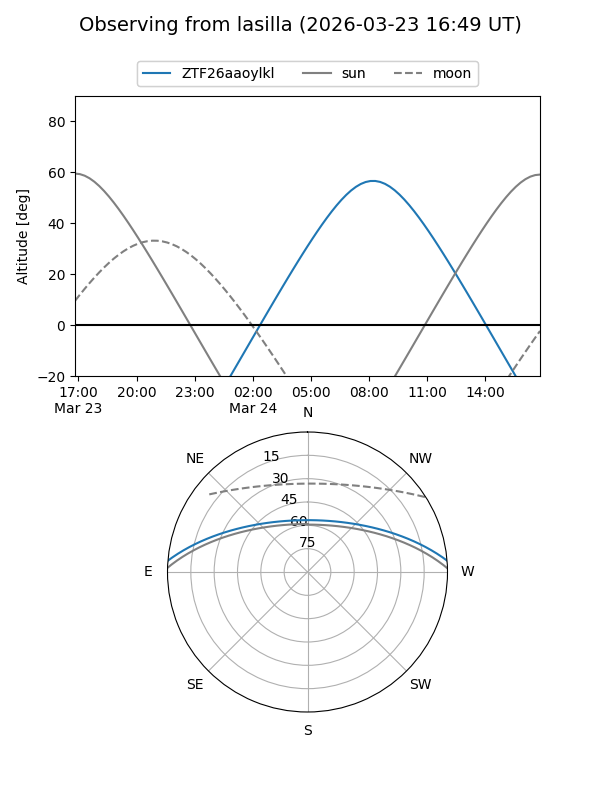
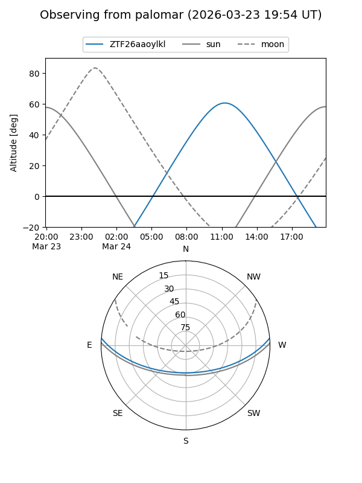

ZTF26aaoylkl
Target ZTF26aaoylkl at 2026-03-23 12:54
Aliases and brokers:
FINK: link
Lasair: link
ALeRCE: link
alt names
ZTF26aaoylkl (ztf,fink_ztf)
Coordinates:
equatorial (ra, dec) = 233.8014,+4.17185
equatorial (HMS+DMS) = 15:35:12.33,+04:10:18.68
galactic (l, b) = (9.8308,+44.72178)
Flags:
Photometry:
last ztfg=16.91
1 ztfg detections
Lightcurve
Visibility


Additional plots